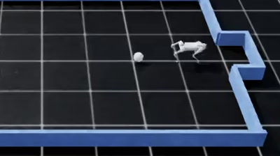
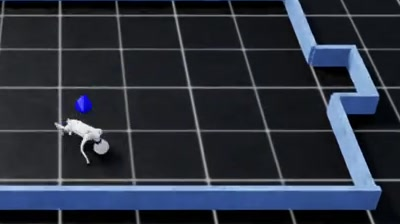

This project studies reinforcement learning for soccer policies on the Unitree Go2. Its central objective is to investigate whether interaction-based learning can give rise to competitive strategies resembling those observed in real soccer matches.
This portfolio documents my work to date in task formulation, reward design, PPO training, and evaluation of locomotion, shooting and skill composition in NVIDIA Isaac Lab.
65.4% stable scoring.962 / 1,472 development starts passed task and stability checks, up from 7.3% across successive policy versions.
Task design, reward development, controller training, and evaluation by Lishengqi Jiang, with research guidance from Eugene Vinitsky and Benjamin Rivière.
Established shooting policy · 9,000-iteration checkpoint
65.4%
Stable scoring success
962 / 1,472 benchmark starts
+58.1pp
Performance improvement
7.3% to 65.4% across versions
6m
Long-range scoring demo
With post-goal stability
8.34h
Logged lineage training
9,000 PPO iterations
Stable scoring refers to the established standalone shooting policy. All results shown are from simulation.
PROJECT OBJECTIVE & INDIVIDUAL CONTRIBUTIONS
Soccer policy learning: objective and current scope.
Unitree Go2 · NVIDIA Isaac Lab Learning, integration and evaluation.
Soccer couples locomotion and ball control with decisions shaped by opponents and teammates. The project uses simulation to investigate learned policies for this setting. My contributions presented here establish and evaluate locomotion and shooting capabilities, and integrate learned skills into longer task sequences.
Project research question Can reinforcement learning enable a quadruped robot to acquire soccer skills and develop competitive strategies resembling those observed in real matches?
Work reported on this page. I independently designed and implemented the task-specific learning and evaluation components described below, with research guidance from Eugene Vinitsky and Benjamin Rivière. The results concern learned soccer skills and selected skill-composition sequences, not competitive match-strategy performance.
TASK FORMULATION
Soccer tasks and success criteria
I translated shooting requirements into explicit checks for active strike, ball release, scoring and sustained support.
These components form my experimental workflow: task formulation, reward and training-state design, policy optimization, and behavioral evaluation. Checkpoint comparisons connect the implementation decisions to observed changes in scoring performance.
One fixed 1,472-case benchmark. Task success and stability evaluated together.
From initial policy to stable scoring—what I designed, improved and validated. I developed the scoring objective, starting-state sampling and evaluation pipeline, then refined the policy through the stages below. Select a checkpoint to connect its training focus with the recorded time and measured result.
SELECTED TRAINING STAGE
9,000 iterations · Targeted starting-state practice
Starting states from recorded misses, with nearby and mirrored variants, were added alongside retained familiar and broader samples.
65.4% · 962 / 1,472Measured stable scoring
0.90 h at this stage · 8,192 parallel environments
Recorded evaluations of selected checkpoints on the fixed development benchmark. Each bar counts completed goals that also pass task-event and stability checks—not training reward. Repeated replays can vary slightly.
+58.1 percentage points
Across successive shooting-policy versions, 107 successful starts became 962. This is cumulative progress from changes to rewards, sampling and training duration, measured on the same development benchmark.
Stable scoring requires the goal, active-strike and ball-release events, together with strict physical stability. These are simulation results for the standalone shooting policy.
Task formulation, training design and policy evaluation.
Individual implementation and analysis. Evidence from learned soccer behaviors.
I designed and implemented the task-specific learning objectives, training-state sampling, controller training and behavioral evaluation presented here, with research guidance from Eugene Vinitsky and Benjamin Rivière. The implementation builds on NVIDIA Isaac Lab, RSL-RL and existing project infrastructure.
PHYSICALLY GROUNDED OBJECTIVES
Task-aligned shooting rewards
I designed shooting feedback around active robot–ball interaction and refined the treatment of recoverable leg contact so useful experience could continue to support learning.
Evaluation separately required a valid strike, ball release, a goal and sustained support. This kept the learning signal connected to the physical outcome the robot was meant to achieve.
Reward design informed by actual task execution.
TARGETED SHOOTING PRACTICE
Targeted training-state selection
I added starting states drawn from actual missed shots, together with nearby and mirrored variants, while retaining familiar configurations and broader sampling. The goal was to improve the next policy's initial shot from those situations.
Net +109 passing starts
853 to 962 of 1,472 starts passed in the final targeted-training stage.
Stage comparison
This comparison evaluates the incoming 8,000-iteration checkpoint and the outgoing 9,000-iteration checkpoint within the same run. It measures progress over the training stage, not the isolated causal effect of the sampling change. The incoming replay count differs slightly from its original evaluation shown above.
TRAINING & EVALUATION SYSTEM
Fixed-benchmark policy evaluation
I built the task-specific pipeline connecting starting-state sampling, parallel rollouts, PPO updates, checkpoint continuation and fixed evaluation.
Familiar and challenging configurations were evaluated together. I checked active strikes, ball release and post-goal support instead of treating a higher reward or a moving ball as sufficient evidence of scoring ability.
1,472 starts. A shared physical-success criterion.
The scoring improvement is cumulative across policy versions; it is not presented as the isolated effect of any single design change.
FROM ACQUISITION TO A SUPPORTED SHOT
Ball acquisition and shooting-policy composition.
A real composed-policy replay, starting with the ball behind the robot.
Detail view of the complete recorded sequence · Full-field: WebM · MP4
COMPOSING LEARNED SKILLS
The ball does not start in shooting position.
The robot initially faces away from the ball. A learned acquisition policy turns and moves into position, then an explicit handoff transfers control to the frozen shooting policy.
The replay completes a goal and retains support through the following 100 control ticks.
This sequence combines separately trained acquisition and shooting policies. Its 8-case evaluation is distinct from the 1,472-case standalone shooting benchmark.

AcquireBall behind; robot turns toward it.

RepositionApproach and prepare the shooting state.ShootFrozen shooter completes the goal.
DEMONSTRATED CAPABILITIES
Learned soccer skills and policy demonstrations.
Physical skills, trained and evaluated. Watch the actual policy replays.
The robot starts about five meters from a laterally offset ball, facing away from its approach direction. The frozen joint-control policy turns, closes the distance, strikes the ball into the goal and retains support.
Ball-to-goal angle at reset
49°
Robot-to-ball distance at reset
5.01 m
Supported after the goal
100 / 100 ticks
Selected successful local replay of the same 9,000-iteration shooting checkpoint, shown in full at recorded speed from a low-oblique camera. The angle describes the ball-to-goal direction relative to the field's long axis, not a commanded launch angle. This illustration does not change the 1,472-case benchmark result.
I trained the low-level movement policy from random initialization, adapted it for pose-conditioned locomotion and ball transport, and integrated it with the soccer task policy.
A later locomotion checkpoint passed 33 / 33 command tests: 11 commands across three reset/noise seed sets. These primitive tests are separate from soccer success rates.
BENCHMARK COVERAGE
One metric. A range of starting states.
The established shooting policy. One consistent physical-success criterion.
COMMON DISTANCE GRID & REMAINING STARTS
Performance varies with the starting state.
Each distance row contains 192 starts across four orientation conditions and three robot-to-ball distances. Other configurations form the disjoint remainder of the full benchmark.
View all six benchmark groups
Same checkpoint and task-and-stability predicate across every group
Starting configuration
Passed / total
Pass rate
The six groups cover the full 1,472-case standalone shooting benchmark. The rear-ball composition demonstration above uses an additional acquisition policy and a separate 8-case evaluation.
What counts as success?
A goal with validated active-strike and ball-release events, plus strict physical stability. This benchmark evaluates the standalone shooting policy; the acquisition-to-shooting demonstration has its own evaluation scope.
The benchmark was used during development. Overall progress combines changes in rewards, sampling, and training duration across versions.
METHOD & IMPLEMENTATION
Different control routes. Explicit training boundaries.
What is learned, what is fixed, and which parameters are updated.
CONTROL DESIGN
From observations to joint commands.
I explored learned hierarchical control and direct-joint shooting as distinct routes. The current skill-composition prototype is not a learned meta-controller.
Both policies were trained with separate PPO optimizers. The historical schedule used 50 high-only iterations, 250 joint-training iterations, then 100 high-only iterations. The movement controller was trained before task-level integration.
188-D observationState + contact historyTask and robot information
Random initializationDirect PPO policyNo pretrained shooting policy
I trained shooting directly through joint targets, with task-specific reward and contact logic. This is the route used for the 65.4% standalone scoring result.
Learned movement skillAcquire or pursueReach a candidate shooting state
Explicit event conditionsControl handoffNot a trained routing policy
Learned shooting skillExecute the shotInspect the complete sequence
The rear-ball replay combines a learned acquisition policy with the frozen shooter. The composed sequence is evaluated from acquisition through the goal and the post-goal support window.
TRAINING & EVALUATION PIPELINE
Sample & observeReset distributions, robot state, ball and contact history
Act & collectParallel control trajectories · 24-step rollouts
Update with PPODeclared trainable parameters and frozen controllers
Evaluate & inspectFixed starts, physical event checks, exact-checkpoint video
My pipeline connects training signals to physical validation: score the complete task, inspect non-passing cases, and preserve proven skills when introducing new ones.
INSIDE THE PARALLEL LEARNING ENVIRONMENT
16 independent pitches. One shared policy.
Independent physical worlds generate experience in parallel. Each robot observes its own state, acts, and resets within its own pitch.
Robot, ball and contact information from each environment.
ACT & COLLECTShared policy, batched inference
Actions generate parallel trajectories for the learning pipeline.
LEARNPPO updates during training
Training uses collected experience to improve the shared policy.
This demonstration freezes the established shooting checkpoint: it shows the real parallel environment and rollout structure, with no PPO updates during recording. Training runs used 4,096–8,192 environments; this recording simulates 16, with a close foreground pitch and other pitches visible behind it.
HOW THE CAPABILITIES WERE BUILT
Training configuration and checkpoint lineage.
Model-free PPO in simulation. Physical behavior evaluated throughout development.
ESTABLISHED SHOOTING CHECKPOINT LINEAGE
8.34 h of logged training
9,000PPO iterations
1.38Binherited transitions
4,096–8,192parallel environments
Logged training-stage wall time along the selected checkpoint lineage; excludes queue time, evaluation, discarded canaries and non-inherited updates.
ABOUT THE RESEARCHER
Lishengqi Jiang
Connecting physical robotics with learning-based control.
My background in mechanical design and robotic system integration informs how I formulate and evaluate robot-learning problems. In Go2 soccer, I lead the task-specific implementation, reward and training design, controller learning, and behavioral evaluation presented here.
The ZIP includes this page, videos and chart data. Extract it and open index.html; no installation or sign-in required.
RESULTS & EVIDENCE NOTES
Personal work and software foundations
The task-specific design, controller training, experimental choices and analysis presented here are my work, carried out with research guidance. The implementation builds on NVIDIA Isaac Lab, RSL-RL and existing project infrastructure. I do not claim authorship of those underlying frameworks.
Stable scoring: metric and evaluation scope
65.4% means 962 of 1,472 fixed development cases passed both task-event and strict stability checks. Task events include active strike and ball release. This is the established standalone shooting policy. Acquisition-to-shooting results are reported separately. The development set informed iteration; performance is not presented as held-out generalization.
Training time and performance improvement
8.34 hours sums logged training-stage wall times only through the selected inherited checkpoints. It is not total project effort or pure GPU compute time. The 7.3% to 65.4% change is cumulative across policy versions with reward, sampling and training-duration changes.
Recorded videos and chart data
Videos retain their real sequence and timing. The sixteen-pitch video is one continuous recording of real independent simulation environments, not a composite. It uses a frozen policy to demonstrate the rollout setup without additional training.